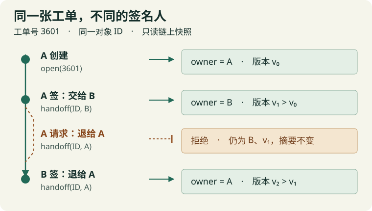

本页目录
不该。要把工单从 B 手里交出去，得看谁现在持有它，不是看谁开的单。3601 是业务号，不一定唯一；即使拿着准确的对象 ID，也不能代替 B 的签名。拒绝这次请求后，工单应仍归 B；一条报错本身还不能证明拒绝原因，要与交接前后的记录对照。
只把签名人换成 B：还是同一个对象，还是要求「退给 A」。这次该不该受理？该。有效交接后对象 ID 不变，最新版本的持有人应是 A。这说明控制权回到了 A，不说明 A 已亲自签收，也不说明维修完成。
只读到这里就可以停；若有其他岗位问题，可返回 M09 目录任选另一课。四个专项彼此独立，不是先后步骤。以下是选做的 Move 程序、本地交接实验和卷末工单；只需能区分知道编号与持钥签名、确认客户端所连的网络。A、B 是独立临时测试钱包，工单不涉及收款；不接公共 Sui 网络，不用助记词、插件或水龙头。业务若不需要链上交接，一次带授权检查的数据库更新可能已经够用。
给工单找一个不会随交接而变的键
关系库中你可能有 ticket(pk, number, assignee, rev)。行锁能让写请求串行，WHERE pk=? AND rev=? 能发现旧版写入；两者都不能代替“这个用户现在是否有权交出这张单”的检查。在 Sui 中，普通 地址拥有对象把这三件事分开了：
| 要问的问题 | 去哪里读 | 不能据此推出什么 |
|---|---|---|
| 哪张工单？ | objectId 是对象的标识，内容里的 fields.id.id 与它相同；fields.number 只是业务标签 |
显示号码 3601 不代表全网唯一。这个教学包允许同号开两张单；只看号码就会串单 |
| 在读哪个状态？ | 普通拥有对象在交易里的引用含 ID、version、对象 digest。读取结果的 previousTransaction 是把它写成这个状态的交易摘要 |
对象摘要和交易摘要不是一个东西；对象版本不是时钟、区块高度、用户第几次点击或工单流水号 |
| 谁能提交它？ | 外层 owner.AddressOwner 记录当前持有地址，执行输入检查会核对发送方 |
知道 ID 或保存旧回执没有授权作用；字段在链上可读，也谈不上工单内容保密 |
在实验包里没有冗余的 assignee 字段。手写第二份经办人再忘了同步，会造成“前端显示 A、协议只认 B”。本课把地址所有权定义为下一次交接权，不是客户已同意、收件人已签收或维修已完成。如果业务要 B 明确同意，应额外设计待接收状态和 B 的确认操作，不能把单向转移当双签。


两个入口，一份能够移动、不能复制的值
module workshop::ticket;
public struct Ticket has key {
id: UID,
number: u64,
}
public entry fun open(number: u64, ctx: &mut TxContext) {
let ticket = Ticket { id: object::new(ctx), number };
transfer::transfer(ticket, ctx.sender());
}
public entry fun handoff(ticket: Ticket, recipient: address) {
transfer::transfer(ticket, recipient);
}
key是 Move 类型的 ability：这个类型可以作为 Sui 对象，首字段为UID。这不是钱包私钥，也不是授予某位操作员的许可证。object::new(ctx)让运行时分配新 UID；number相同不会拿到相同 UID。- 调用
open时，运行时给出交易上下文，ctx.sender()来自本次发送者，不是页面能任意填写的“当前用户”。模块把新对象交给这个地址。任何人都能开自己的单；没有对发行数量、企业身份或订单号去重作承诺。 handoff按值接收ticket: Ticket，不是把一串 ID 当作已授权工单。调用方必须提供能被运行时接受的当前输入。该类型没有copy或drop；模块把值移给transfer::transfer后，不能再拿同一个局部变量转第二次。这里有两层不同的检查：Move 对值的使用规则，与账本对交易输入/签名的检查。- 我们故意没给
Ticket声明store。有key + store的对象可以走通用public_transfer；这里只有定义模块能用受限的transfer交接本类型。因此演练通过ticket::handoff，不通过通用sui client transfer。入口对所有人可见，不表示所有人都能提供 B 拥有的输入。
版本为什么未必加一？ 假设交接前工单版本是 7，付 gas 的 SUI 币对象版本是 12。本例这两项是交接时的可变输入，新写入的版本是 1 + max(7, 12) = 13。这不是工单丢了五条回执。反过来，若工单是 7、gas 币是 3，则结果是 8。本地脚本让同一次交易的输入引用、gas 引用、变更条目和后读的对象互相校验，不用假定起始版本。这里算的是对象版本，不是 gas 数量；1 SUI = 1,000,000,000 MIST。
从空创世发布，不借用你的 Sui 配置
在仓库根目录运行以下命令。需要 Bash、tar、curl、install、CPython 3.10+（仅标准库）以及能运行官方本机发行文件的 macOS 或 Ubuntu；不用 Docker、Rust、PostgreSQL、外部 RPC。先预留约 3 GB 空间给发行归档、框架源码、节点和临时账本。第一次安装会联网，后面的运行使用本地依赖。
LAB=labs/m09/move-ticket
bash "$LAB/setup.sh"
WORK=$(mktemp -d)
python3 "$LAB/run.py" --out "$WORK/default"
python3 "$LAB/review.py" "$WORK/default" --expect-number 3601 --expect-final A
安装脚本固定 MystenLabs mainnet-v1.53.2 的 sui、sui-node 以及同标签框架。标签名是软件来源，不是选择主网。脚本按平台核验发行包，macOS arm64 归档 SHA-256 为 4f2c65d55057110ff11033774d1b9778d6f49594d321ab776026194151386048；源码归档 SHA-256 为 b32bc517e9cda7257386beacb1e38b3886949d6a5e88f312c9905dda10b92939。下载、二进制和 framework/{sui-framework,move-stdlib} 放在 ~/.cache/chain-course/m09/sui-1.53.2/，不改全局 PATH。哈希不符请停下，不要放宽检查。固定旧版本是为了可复跑这个本地 JSON-RPC 实验，不是生产版本推荐。
run.py 为每轮新建临时 HOME 和 SUI_CONFIG_DIR，从空目录 sui genesis --committee-size 1 产生一份创世，再按配置分别启动验证者和全节点。它把 RPC 和节点监听地址限制到回环；不启动 faucet 或索引服务。两个客户端配置都只知道这一轮的回环 RPC。A 取自临时创世钱包，B 在另一份全新的 keystore 中生成；不展示或存档恢复短语。脚本把一个测试 SUI 从 A 拨给 B 付 gas，这笔 fund-B.json 和“工单归谁”无关。发行版节点带 HTTP 遥测，脚本为子进程把非本地 HTTP(S) 代理限定到一个不接受连接的回环端口；这不是操作系统级网络沙箱。
Move.toml 显式引用同版的本地 Sui 框架，不用拉取滚动分支。运行器在临时包目录编译，publish --verify-deps 对照本地链上的依赖，完成发布后从 published 变更取包 ID，再找刚创建的完整类型 包ID::ticket::Ticket。包 ID、工单 ID、升级能力对象 ID、付费币 ID 都可能同时出现在一次演练里；取“列表第一个 ID”不能定位工单。
下表对应真正执行的 CLI 调用。$P、$T、$A、$B 分别表示本轮的包、工单和两位钱包地址；自动脚本负责填值、给各命令指定临时 --client.config、预算和 --json。不要在自己的默认钱包照抄缩写命令。
| 默认演练 | 参数中的动作 | 应保留什么 |
|---|---|---|
| A 建单 | call --package $P --module ticket --function open --args 3601 |
open.json 有 created 变更；created.json 对象归 A |
| A 交班 | call --package $P --module ticket --function handoff --args $T $B |
handoff.json 的 sender 为 A；handed.json 同 ID、较新版本、归 B |
| A 要求退回 | call --package $P --module ticket --function handoff --args $T $A |
refusal.json 非零退出，错误指向该对象、当前 owner B 与请求签名人 A；after-refusal.json 和 handed.json 对象完全一致 |
| B 要求退回 | 同一个 handoff --args $T $A，只换客户端为 B |
return.json 的 sender 为 B；returned.json 同 ID、再次增版、归 A |
被拒时不能只看一个红色错误：丢了网络、gas 不足和把 $P 写成 $T 都足以令命令失败，却无法证实权限边界。这里明确给出 gas 预算，走正常客户端请求，由输入所有权检查拒绝；没有构造特殊签名或修改节点。拒单文本不是成功回执，也不要编一笔 Move 抛错后已上链的交易号。 对照组让有权的 B 真正完成相同的退回，排除“函数本来就不能用”。
接手人怎样读证据，而不是认截图
--out 要求新目录，防止混用创世。结束时脚本会关闭节点，清理临时钱包、编译目录和节点库；留下的是公开材料。先独立读快照，显示完整 ID、版本、持有地址和上一笔实际写入交易：
python3 - "$WORK/default" <<'PY'
import json, pathlib, sys
p = pathlib.Path(sys.argv[1])
for label in ('created', 'handed', 'after-refusal', 'returned'):
o = json.loads((p / (label + '.json')).read_text())['data']
print(label, o['objectId'], o['version'], o['owner']['AddressOwner'], o['previousTransaction'])
PY
先用上面打印的四行判断权限：拿 handed 与 after-refusal 对读，持有人都为 B，版本、ID 和上次写入交易都没有变；再去 refusal.json 看拒绝原因确实是请求签名人 A 不拥有这个输入对象。若只是断网，快照也可能不变，但不能得出权限检查生效的结论。
再验 B 的成功退回，不只看最后一行写了 A。取 return.json 的 transaction.data.transaction.inputs 中工单的 ID、版本和对象摘要，与 handed.json 的对象逐项对齐，证明交出的是 B 手里那一版。用 gasData.payment 的 gas 币版本和工单输入版本按前面的最大值公式算出新版本；用同一 ID 在 objectChanges 找新 owner 和对象摘要，与 returned.json 对照。最后，这张快照的 previousTransaction 要等于 return.json 的交易 digest：前者指向生成这张新记录的那一笔，不是对象自身的摘要。复核器用 run.json 的角色映射做这些检查；默认判据是 MATCH_LOCAL number=3601 final=A，并报三次实际版本、refused=UNCHANGED。地址、摘要和版本以本轮为准。
只改业务的签收要求，不重发交易：
python3 "$LAB/review.py" "$WORK/default" --expect-number 3601 --expect-final B
预期 HOLD: wrong final holder，退出 3。交班那笔确实曾把对象交给 B，但对账要求的是最后的持有人，不能跳过第三笔实际写入。离线复核的前提是信任归档来源：本脚本没有独立认证检查点、重验验证者证书，也不能证明链外人员已经交班。
如果要改成“主管能调度工单”
不要把 ability、capability、shared 当作三个权限开关。key、store 是类型静态具备的 ability。Capability 是应用授予某项操作权限的一份值，常建模成独立对象，例如 DispatchCap。只允许模块在初始化时创建它，要求管理入口额外接收 &DispatchCap。谁能合法提供这份值，谁才能走这个入口；如果有多个项目，能力还要绑定相应工单簿 ID 并核对，不能接受别的簿同类型的能力。发布回执里的框架 UpgradeCap 只涉及包升级，不是替所有经办人签字的派工权。
如果单子仍是 B 地址拥有的，主管仅有 DispatchCap，还是不能把 B 的 Ticket 直接当作自己的交易输入。反之，如果真正需求是多方轮流更新同一本队列，可以在创建时 share_object 一份 shared 对象：它不再依赖某个经办人地址才能作为交易输入，不同提交者可以请求访问。但修改动作仍受 Move 入口和权限检查约束。可以把“分配”建模成 assign(board: &mut Board, cap: &DispatchCap, ...)，把“认领”建模成另一条核对签名人的入口。共享不是“公开任意改”，也不是对已交出的普通对象补点一个按钮就改成共享。热门 Board 的写操作需要排定次序，吞吐和拥塞要用相同业务流量实测。这是改需求后的设计对照，实验没有部署共享队列或主管接口。
同一张需求单，三种状态放在哪里
| 平台与最小模型 | 交接时谁做授权检查 | 何时选它，付出什么 |
|---|---|---|
EVM：合约内 mapping(uint256 => Ticket)，行里放 assignee；改变后发事件 |
合约显式校验 msg.sender == assignee，再更新同一行；若要标准化可评估 ERC-721 并决定是否允许 operator |
团队已有 Solidity、EVM 钱包及日志索引，或要求按业务号唯一开单时，合约可集中检查。要自己定义角色、并发/重试语义和事件，事件不是当前持有人字段 |
| Solana：每工单一个由程序拥有的数据账户，可用“簿 + 工单号”推导 PDA；在账户数据存经办人公钥 | 程序核对账户归属、结构/PDA 和当前经办人的 signer，再写入新公钥。运行时外层 owner 是程序，不能拿它当“经办人地址” |
已有 Solana 客户和账户标准、想显式规划交易访问哪些账户时合适；不同工单可分账户。须处理账户大小、创建成本、账户清单、写锁和约束 |
Sui：每张 Ticket 一个 UID，普通地址拥有，外层 AddressOwner 就是本题交接权 |
运行时检查拥有对象输入与发送者，模块决定准许的操作；接收方无需签字 | 一物一持有人的交接和按对象查证很直接。若要求主管随时追回、同号绝不重复或多方争抢，必须重新安排状态/能力和共享写入，不是原模型天然免费支持 |
选型要追问：只需知道“此刻谁能转出”，还是需要“经理可越过经办人代派、客服可回滚、接单方必须签收”？三者不等价。先画出谁能提交哪项状态，再谈语言和每秒交易数。
课后作业：不让工单号被 JavaScript 四舍五入
另起一轮，开 9007199254740993（比二进制浮点能逐整数精确表示的上界 2^53 多 1）号单。Java 可以用正的 long 表示这个数，网页若先转成 JS Number 则可能读到 9007199254740992；从命令行到回执都保留十进制字串或整数。
python3 "$LAB/run.py" --number 9007199254740993 --out "$WORK/precision"
python3 "$LAB/review.py" "$WORK/precision" --expect-number 9007199254740993 --expect-final A
python3 "$LAB/review.py" "$WORK/precision" --expect-number 9007199254740992 --expect-final A
交一张四行表：每行列出 ID、业务号、owner、version、previousTransaction，指出哪两行完全相同。过关线：第一次复核 MATCH_LOCAL，第二次只改合同号就 HOLD、退出 3；用 handoff.json 的工单与 gas 输入手算交班后的实际版本。只给 3601 例子的地址或用截图抹掉完整 ID，不通过。
卷末工单 X-936：按岗位签自己能证明的一联
你接手一次技术选型演示。委托人没有要求四种技术集成：从下面四联任选实际岗位需要的一联，不用先学其他三课。每联都要交输入、运行环境、正常原件、只改一个条件的反例、据此能签收什么及不能签收什么。其他三联不因这一联通过而自动通过。
- 工单平台联（本课）：936 号返修单，由夜班 B 开单交给 A，收到退回通知后只有当前持有人 A 可以将其交还 B。最终收件人必须是 B，不能拿中途归 A 的回执结案。
- 钱包联：用第 33 课的独立作业输入，在两个回环 Lightning 节点核对发票、通道内支付和关通道证据；不能用一笔链上付款代替发票结算。
- 数据服务联：用第 34 课的独立作业输入，指定部署和同一目标块，比对派生视图与 Java 账本并交重建记录；不要把两个“最新”当同一高度。
- 证明应用联：用第 35 课的独立作业输入，在同一验证密钥下检查 A 的证明配 A 的承诺、A 的证明配 B 的承诺、B 的证明配 B 的承诺；三次应依次为通过、拒绝、通过，不认证真实身份。
工单平台联的接手命令（从仓库根目录开始，可给未看过 3601 范例的同事）：
LAB=labs/m09/move-ticket
bash "$LAB/setup.sh"
BOX=$(mktemp -d)
python3 "$LAB/run.py" --out "$BOX/X-936" --number 936 --reverse
python3 "$LAB/review.py" "$BOX/X-936" --expect-number 936 --expect-final B
python3 "$LAB/review.py" "$BOX/X-936" --expect-number 936 --expect-final A
独立过关线：保留 X-936/ 内公开 JSON。复核 B→A→B 的三个成功写入引用的是本轮同一对象；B 的旧权限申请具体因 owner/signer 不匹配而被拒，前后对象原件相同；A 才能完成最后一笔退回。按工单要求「最终持有人是 B」复核，结果为 MATCH_LOCAL number=936 final=B；最后一条只把要求改成「最终持有人是 A」，同一组链上写入仍成功，签收判断必须是 HOLD、退出 3。交一段对“如果主管必须能代派怎么办”的选型意见，写清需要改变哪类对象或权限。不要打包 ~/.sui、keystore、节点库或助记词；本联与其他三联没有共用的交易或金额。
离线先接手一份实物： 仓库里有一轮角色与对象清单、错误签名人的拒单和当前持有人的退回回执。从根目录运行 python3 labs/m09/move-ticket/review.py labs/m09/evidence/X-936 --expect-number 936 --expect-final B，只读公开原件，不用启动 Sui。然后再按上面的命令用新的创世交自己的单；两轮的对象 ID 不应混用。
可直接核对的资料
- Sui 文档：地址拥有对象、共享对象、版本规则与 Lamport 算例。核对“谁能提交”和“谁排写入顺序”是两个问题。
- The Move Book：Capability 模式。比较应用授予的对象能力与类型的
key、store。 - MystenLabs：本课官方发行、该版 transfer 模块、该版输入检查。看
transfer的类型约束，以及对象拥有者与签名人不匹配的拒绝条件。 - 对照设计：Solidity 的 mappings、Solana 账户模型。本课没有把同一个包部署到这两种链上，也没有做跨链吞吐基准。